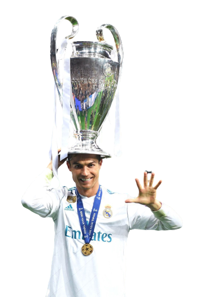
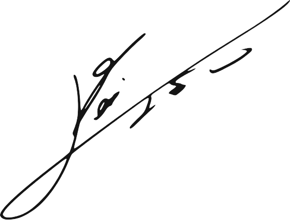
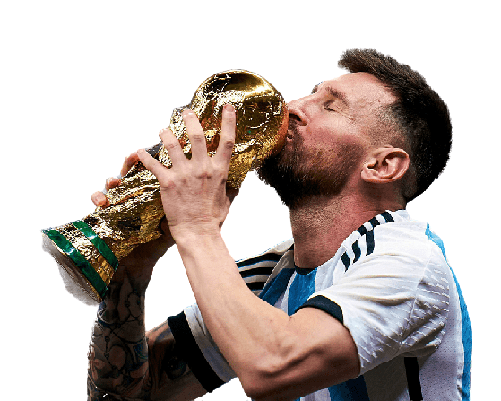

CRISTIANO RONALDO DOS SANTOS AVEIRO
- Nació el 5 de febrero de 1985 en Funchal, Madeira, Portugal
- Debutó el 14 de agosto de 2002 en el Sporting C.P.
- Actualmente juega en Arabia Saudita para el Al-Nassr F.C.
- Máximo goleador de la historia del fútbol con 859 goles entre clubes y Portugal
- Máximo goleador y Asistidor de la UEFA Champions League con 141 goles y 42 asistencias
- Primer, segundo y tercer máximo goleador en una misma temporada de la UEFA Champions League
- Máximo goleador de la historia de las selecciones con 127 goles
- Primer y único jugador en marcar en todos los minutos de un partido

LIONEL ANDRES MESSI CUCCITTINI
- Nació el 24 de junio de 1987 en Rosario, Argentina
- Debutó el 16 de octubre de 2004 en el F.C. Barcelona
- Actualmente juega en Estados Unidos para el Inter Miami CF
- Máximo goleador sudamericano de la historia del fútbol con 805 goles entre clubes y Argentina
- Más goles oficiales en un año natural el 2012 con 91 goles
- Máximo ganador del Balón y Bota de oro

